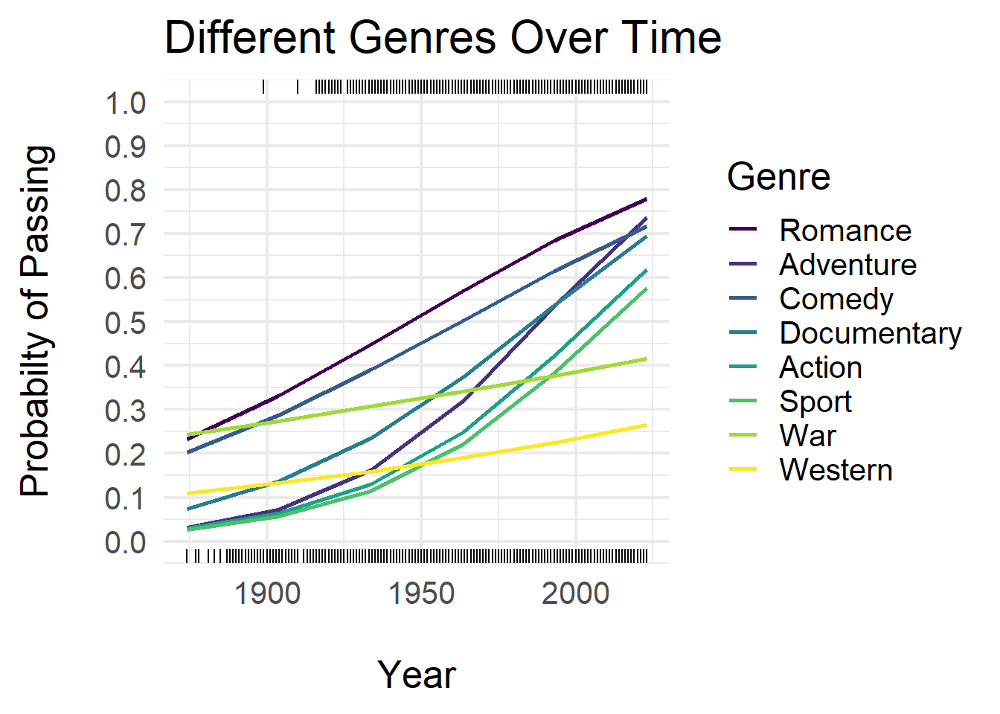

Predicting Bechdel Test Results through Statistical Modeling
Hailey Quintavalle
Matt Higham (Advisor)
Department of Math, Computer Science, and Statistics
St. Lawrence University

Abstract
Logistic regression used to model
release yearandgenresRating analysis examines
budget,IMDb user ratings, andMetascoreratings across timeFindings show more recent movies in the Comedy or Romance genre have higher predicted probability of passing compared to other genres
- Higher critic ratings and lower user ratings = more likely to pass
What is the Bechdel Test?
- Created by Alison Bechdel in 1986
- Originally a comic strip
- Used to analyze the presence of women in movies [1]
Movie must contain two named women who have a conversation that is NOT about a man.
Flaws of the Bechdel Test
- Too simple requirements
- Disregards which kinds of women have dialogue [2]
Data
- Final data set contains 10,178 movies - ranging from 1874 to 2023
| Title | IMDb ID | Year | Genres |
|---|---|---|---|
| Star Wars | 76759 | 1977 | Action,Adventure,Fantasy |
| Grown Ups | 1375670 | 2010 | Comedy |
| Bullet Train | 12593682 | 2022 | Action,Comedy,Thriller |
Data Source: IMDb Non-Commercial Datasets
| Title | IMDb ID | Year | Bechdel Rating |
|---|---|---|---|
| Star Wars | 76759 | 1977 | Fail |
| Grown Ups | 1375670 | 2010 | Pass |
| Bullet Train | 12593682 | 2022 | Fail |
Data Source: Bechdel Test Movie List (bechdeltest.com)
Rating Analysis
\[ logit(\pi) = \beta_0 + \beta_1 \cdot \text{Budget} + \beta_2 \cdot \text{Year} + \beta_3 \cdot \text{IMDb Rating} \]
\[ + \text{ } \beta_4 \cdot \text{Metascore} \]
\(logit\) = log odds of passing the test
\(\pi\) = probability
\(IMDb \text{ } Rating\) = User ratings
\(Metascore\) = Critic ratings

Data Source: TidyTuesday social data project (Github)
Interpretation
Predicted probability of a movie PASSING increases for:
Movies with lower budgets
Movies with lower IMDb user ratings
Movies with higher critic ratings
| Estimate | Std. Error | z value | Pr(>|z|) | |
|---|---|---|---|---|
| (Intercept) | -29.56 | 17.86 | -1.655 | 0.09793 |
| budget_2013 | -4.733e-09 | 1.211e-09 | -3.909 | 9.255e-05 |
| year | 0.0161 | 0.00886 | 1.817 | 0.06923 |
| imdb_rating | -0.5709 | 0.1055 | -5.413 | 6.213e-08 |
| metascore | 0.02071 | 0.005734 | 3.611 | 0.0003046 |
Genre Analysis
\[ logit(\pi) = \beta_0 + \beta_1 \cdot Year + \beta_2 \cdot \text{Animation} + \beta_3 \cdot \text{Action} + \beta_4 \cdot \text{Adult} \]
\[ + \text{ } \beta_5 \cdot \text{Adventure} +\ldots + \beta_{29} \cdot \text{Year:Western} \]
\(Animation\) = 1 (yes) or 0 (no)
\(Year:Western\) = interaction term

Interpretation
For recent years, genres with higher probability of PASSING:
- Romance, Adventure, Comedy
Genres with lower probability of PASSING:
- War, Western, Sport
Limitations
Data for Rating Analysis only contains movies up to 2013
Bechdel data contains most popular movies reported by users
References
Alison Bechdel, 1986. Dykes to watch out for. Firebrand Books.
What “The Bechdel Test” doesn’t tell us: examining women’s verbal and vocal (dis)empowerment in cinema (O’Meara, J., 2016)